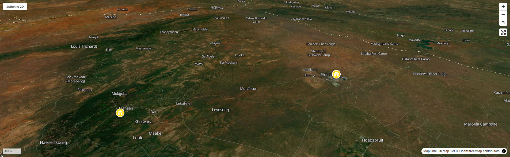

Backpacking Limpopo Province
Everyone comes to South Africa for the bush, and most of them go to Kruger. Limpopo is where you go when you want the bush without the crowds. When you want the oldest human rock art in southern Africa, and trees so ancient that they were already old when the Roman Empire fell. When you want to cross into Zimbabwe or Botswana through a border post where the forms are still filled in by hand, and the official stamps your passport with the kind of slow, deliberate authority that suggests this is an act of consequence. When you want a night so dark and so quiet — a billion stars, a single hyena calling somewhere out in the black — that you lie awake not from fear but from the feeling that this is what silence is supposed to sound like.
Read More
Limpopo is South Africa's northernmost province and, in almost every way that matters to a backpacker, its most extraordinary. It is bigger than England. It shares borders with Zimbabwe to the north, Botswana to the west, and Mozambique to the east. It is the traditional heartland of the Venda, Tsonga, Sotho, and Ndebele peoples, and their cultures — architecture, music, food, ritual, mythology — are not museum exhibits here. They are living, daily realities woven through every town and village in the province. You are not going to a theme-park version of African culture. You are going to the thing itself.
The landscape is as varied as the culture. The Soutpansberg mountains in the north are green, misted, and cool, running from west to east across the province like a spine and supporting a subtropical biodiversity that botanists have been cataloguing for 200 years without finishing the job. The Limpopo River, which gives the province its name, forms the northern border — the very line between South Africa and its neighbours — and the floodplain on its southern bank is Big Five country. The Waterberg, in the west, is a UNESCO Biosphere Reserve: ancient red sandstone ridges, malaria-free game reserves, and a landscape that looks like it belongs to a chapter of the earth's geological history that the other continents have lost. The Lowveld, in the east, merges seamlessly with the northern sections of Kruger National Park, so that the boundary between "Limpopo Province" and "Kruger" feels entirely administrative.
And then there are the baobabs. A single sentence cannot do them justice. A full paragraph probably can't either. You will drive through the northern Lowveld and see them — individually, in clusters, occasionally in cathedral groves — and you will stop the car, or tell the driver to stop, and you will get out and stand next to one, and you will understand something about the age of this land that no amount of reading prepared you for. The largest of them are three thousand years old. Some are wide enough to have doors cut into them, to have pubs built inside them, to house the kind of mythology that accumulates over thirty centuries. They are not like other trees. They look like they have been turned upside down, roots in the air, thinking some long, slow thought that began before your civilisation existed. They will become the image you carry from Limpopo for the rest of your life.
What Kind of Place Is This, Exactly?
Limpopo is the province that most European backpackers skip, and the one that the backpackers who don't skip it tend to describe as the best thing they did in South Africa. The gap between its reputation and its reality is enormous, and almost entirely in the traveller's favour.
Its capital is Polokwane — formerly Pietersburg, rechristened in 2005 — a functional mid-sized city of about 130,000 people that acts as the transit hub for the province. It is not a destination in itself. Think of it the way you'd think of a good transport interchange: well-organised, practical, with decent accommodation if you need to break a journey, but not the reason you came. The reason you came is everything around it: the Soutpansberg, the Waterberg, Mapungubwe, the Venda heartland, the ancient baobab groves of the north, the untouristed game reserves of the Lowveld, and the great thin brown line of the Limpopo River at the country's northern edge.
This is not a province you experience from a single base. Limpopo rewards movement. The distances are significant — the province stretches roughly 350km from south to north and 400km from west to east — and the highlights are spread widely enough that you need either a hire car or, at minimum, a strategy for combining local transport with organised excursions. The distances between places are long but the roads are good, the views from those roads are often extraordinary, and the journey through this landscape is part of the point.
What Limpopo will not give you: nightlife. A cocktail bar with a rooftop view. A street food market that opens until midnight. The kind of urban energy and social density that Cape Town and Johannesburg offer. What it will give you: a physical encounter with Africa — its scale, its silence, its sky, its wild things — that is more direct and less mediated than almost anywhere else in the country.
The History That Gets Under Your Skin
Limpopo is one of the oldest inhabited parts of the African continent, with a human presence stretching back more than a million years. The San people — whose click-language rock paintings appear on the walls of shelters throughout the Waterberg and the Soutpansberg — were here long before the Bantu-speaking peoples began migrating south in the first millennium CE, long before any European drew a map of this landscape, long before the word "province" existed. Their paintings are not decorations. They are records: of hunts, of rain-making rituals, of spiritual encounters with the world beyond the physical. Some are 10,000 years old. When you stand inside a rock shelter in the Waterberg looking at a small red eland painted on the ceiling, the distance between you and the person who put it there collapses in a way that no museum can replicate.
The kingdom of Mapungubwe, in the far north where the Limpopo and Shashe rivers converge at the border of three countries, was the first complex state in southern Africa. Between roughly 900 and 1300 CE, its rulers controlled the trade routes between the interior gold fields and the Swahili Coast ports that connected sub-Saharan Africa to the Arab world, India, and China. Glass beads from Egypt, cotton cloth from India, and porcelain from China have been found at Mapungubwe. The golden rhinoceros — a small figure of a rhinoceros beaten from gold foil over a wooden core, found in the royal burial site on the hill above the settlement — is now one of South Africa's national treasures and the origin of the Order of Mapungubwe, the country's highest civilian honour. The University of Pretoria excavated the site from 1933 onwards. The apartheid government subsequently classified its findings and suppressed their publication: the evidence of a sophisticated African kingdom pre-dating European contact was not compatible with the racial ideology of the time. The site was opened to the public after 1994. It is a UNESCO World Heritage Site. It is also, for a certain kind of traveller, the most important place in South Africa.
The Venda people, who dominate the cultural life of the Soutpansberg region and the far north, maintained an independent kingdom — the last independent Black kingdom in South Africa — until 1898, resisting both the Boers and the British longer than any other group in the country. Their cultural practices, including the Domba initiation ceremony (the python dance, performed by young women in a living human chain that moves in the fluid, undulating pattern of a python), the rain-making rituals of Lake Fundudzi, and the tradition of the tshikona (the Venda national music, performed communally on sets of bamboo pipes and regarded as one of the most important musical traditions in southern Africa), are not historical relics. They happen. They are alive. With appropriate sensitivity and the guidance of local cultural operators, visiting communities in the Venda heartland and understanding these traditions from the inside is one of the most profound things available to a foreign traveller in the whole of South Africa.
Understanding the Province: Five Zones, Five Worlds
Like the Cape Peninsula, Limpopo is not one place. It is a collection of very different landscapes and cultural worlds spread across a vast area. Understanding the zones will help you decide where to go and what to prioritise.
The Waterberg: Ancient Rock, Malaria-Free Game
The Waterberg Massif is a vast plateau of ancient red sandstone in the western part of the province, about two hours' drive north of Pretoria on good roads. It has been designated a UNESCO Biosphere Reserve on the basis of its extraordinary biodiversity: more than 300 bird species, significant populations of Big Five animals, and a botanical richness that reflects the overlap between the Kalahari and the eastern Lowveld in a single system. Critically for backpackers, the Waterberg is malaria-free — one of the only Big Five game areas in South Africa where you can see lion, elephant, rhino, buffalo, and leopard without antimalarial prophylactics. The main town is Vaalwater, a small agricultural service centre with a fuel station and a few guesthouses. The game reserves — Lapalala, Welgevonden, Marakele National Park — are of exceptional quality. Marakele, in particular, is the least-visited national park in South Africa with Big Five status, which means you can drive through it in an open vehicle on an early morning with almost no other traffic, in a silence broken only by the sound of the engine and whatever is happening on the other side of the next ridge.
The Soutpansberg: The Misted Mountains
Running from west to east across the northern quarter of the province, the Soutpansberg is a mountain range of subtropical forests, ancient cycad groves, perennial rivers, and dense bird life. The main town is Louis Trichardt (now officially Makhado), a pleasant, functional town on the N1 highway at the foot of the mountains. The range above it — accessible by hiking trails and dirt roads — contains some of the finest birding habitat in the country: the Soutpansberg is the southernmost range where several Central African bird species are found, making it a destination that serious birders travel from Europe specifically to visit. Birdwatchers aside, it is also superb hiking terrain for anyone willing to move slowly through thick bush and look carefully. The Hanglip Mountain has fossil-rich rocks and ancient cycad stands. The town of Thohoyandou, in the heart of the former Venda homeland, sits at the eastern end of the range and is the cultural capital of Venda country — not a tourist town, but a real and fascinating place that rewards exploration by those not looking for the reassurance of tourist infrastructure.
The Venda Heartland: Lakes, Legends, Living Culture
In the hills east of the Soutpansberg and north of Thohoyandou, the landscape becomes something from another world: mist-shrouded forests, circular thatched homesteads, women selling pottery by the roadside, rivers where the local mythology says spirits live, and Lake Fundudzi — the only natural inland lake in Limpopo, held sacred by the Venda people, hidden in a forested valley that swallows sound. Lake Fundudzi is not open to independent visitors. You cannot simply drive up and walk to the shore. To visit, you must hire a local guide from the surrounding villages, request permission from the community through a formal process, and arrive with appropriate respect. This is not a barrier to tourism; it is a condition of tourism that every visitor should accept without complaint. The lake has been sacred for longer than any tourist destination has been a destination. The right attitude — curiosity, respect, and the willingness to experience something on terms that are not yours — is what this part of Limpopo requires, and what it rewards.
The Far North: Baobabs and Borders
North of the Soutpansberg, the land drops away onto the hot, flat Limpopo floodplain. The vegetation changes immediately: mopane woodland, thorn scrub, and — scattered across the landscape in a way that makes no visual sense but is entirely real — baobabs. This is the warmest, driest, most remote part of the province. The towns thin out. The distances between fuel stations become relevant. The horizon opens up until it becomes the kind of panoramic view that makes you realise you have been thinking too small. Mapungubwe National Park is here, on the border with Zimbabwe and Botswana, where the Limpopo and Shashe rivers meet in a wide, shallow confluence full of hippos. The Venetia diamond mine is here, invisible behind its security fencing. The border crossing at Beit Bridge — the busiest land border in sub-Saharan Africa, perpetually chaotic, often jammed with trucks waiting for days — is here. If you are crossing into Zimbabwe, this is where you do it.
The Limpopo Lowveld: The Back Door to Kruger
The eastern edge of the province, where the ground drops from the Drakensberg Escarpment toward the Mozambican coastal plain, is the Lowveld — a hot, wide, fertile basin of bushveld and agriculture that has been growing subtropical fruit (mangoes, avocados, bananas, litchis, macadamia nuts) since the irrigation schemes of the 1960s turned it into one of the most productive agricultural regions in southern Africa. The province's claim to being the country's largest producer of fruits is not a tourist brochure boast; it is a fact you encounter directly at every farm stall on every road, where the produce is fresh, abundant, and ludicrously cheap. The towns of Tzaneen and Phalaborwa are the main centres. Phalaborwa sits directly against the western fence of the Kruger National Park, and the Phalaborwa Gate is among the best-value entrances to the Park for those who want to avoid the tourist density of the south.
Limpopo FAQs For Backpackers
Is Limpopo really worth the effort, or should I just do Kruger?
This is the right question, and the answer depends entirely on what you want from your South Africa trip. Kruger is the most famous game reserve in Africa for a reason — it is extraordinarily good — but it is also a well-oiled machine that processes several hundred thousand visitors a year, and certain areas of it (particularly the south, around Skukuza and Lower Sabie) can feel busy in high season. Limpopo, which contains the northern third of Kruger as well as its own entirely separate game areas, offers you a version of the South African bush that is quieter, less mediated, and in many respects more powerful precisely because fewer people are experiencing it simultaneously.
The other answer is: Limpopo is not just a bush destination. Kruger has almost nothing to say about human history, culture, or archaeology. Limpopo has Mapungubwe, the San rock art sites, the living culture of the Venda and Tsonga peoples, the Soutpansberg mountains, and a hundred small, unhurried encounters with the reality of northern South Africa that have nothing to do with wildlife and everything to do with understanding a place. If you are the kind of traveller who wants to come home having seen more than a checklist of animals, Limpopo is where you need to be.
Do I need a hire car?
Honestly: yes, for most of what makes Limpopo worthwhile. The province's highlights are spread across a vast area with limited public transport between them. The bus routes connect Johannesburg and Pretoria to Polokwane and onwards to the Zimbabwe border, and minibus taxis connect towns and villages throughout the province — but the game reserves, the baobab groves, the rock art sites, and the Venda cultural heartland are all off the main transport corridors. Without a hire car, you can reach Polokwane and get organised from there, but your options narrow considerably once you're trying to get anywhere interesting.
The hire car case for Limpopo is stronger than almost anywhere else in South Africa because the roads are genuinely good (the N1 north from Pretoria is one of the country's best highways), the distances are long but the scenery makes them pass quickly, and the joy of arriving at a remote location entirely on your own schedule — stopping when the light is right, detouring because something looks interesting, pulling over for the roadside mango stall — is very much the point. Pick up in Johannesburg (cheapest) or Polokwane (most convenient if you're flying in). A 4x4 is not necessary for the main highlights but is useful if you intend to explore seriously off the main routes, particularly in the far north.
If you genuinely cannot or prefer not to drive, the most practical alternatives are: organised game lodge packages that include transfers from Johannesburg; joining a guided overland tour that passes through the province; or using Polokwane as a base and booking day excursions through local operators. This works reasonably well for the game parks but eliminates the freedom that makes Limpopo remarkable.
Is malaria a concern?
This is important and the answer is nuanced. The Limpopo Lowveld and the areas around the Limpopo River — including the sections of Kruger accessed through Limpopo Province — are malaria risk areas, particularly during and after the rainy season (October–April). Malaria is caused by a parasite transmitted through the bite of the female Anopheles mosquito; it is treatable if caught early and preventable with antimalarial prophylactics.
If you are travelling to the Lowveld, Mapungubwe, or anywhere along the northern Limpopo River valley, consult a travel health professional before departure and take antimalarial medication as prescribed. The three most commonly used options are doxycycline, atovaquone/proguanil (Malarone), and mefloquine (Lariam); each has different side-effect profiles and cost points, and the right choice depends on your itinerary, your duration of travel, and your personal health history. Start the course before you arrive, not when you land. Use DEET-based insect repellent on all exposed skin from dusk onwards. Sleep under a mosquito net if your accommodation doesn't have screened windows or aircon. Wear long sleeves and trousers in the evening.
The good news: the Waterberg and the Soutpansberg mountains are malaria-free. If your Limpopo itinerary focuses on these areas and avoids the Lowveld and far north, you do not need antimalarials. Check the specific areas you intend to visit with a travel health clinic rather than making a general assumption either way.
When is the best time to go?
The two best windows are May–July and August–October, for different reasons.
May–July (dry season, cool): The best game-viewing season. The grass has dried and thinned, the waterholes concentrate animals, the mopane woodland has lost enough of its canopy that sightings are easier, and the temperatures — cool to warm rather than blazingly hot — make hours in a game vehicle comfortable rather than exhausting. Malaria risk is at its lowest in this window, though it never disappears entirely in the Lowveld. The baobab trees are leafless and even more architectural than in the wet season.
August–October (late dry, approaching storm season): The hottest and driest months, when animals are most concentrated around water and the landscape is at its most austere. Game-viewing at its most intense. October brings the first storms, the mopane turns brilliant green overnight, and the migrant birds arrive from central Africa. Wildlife photographers specifically target October for the combination of dramatic skies and concentrated animal activity. Heat can be extreme — 40°C in the Lowveld is normal in October — so plan game drives at dawn and dusk and treat midday as reading time.
November–April (summer, rainy season): Beautiful in a completely different way — lush, green, subtropical, full of rain-washed air and dramatic afternoon thunderstorms — but harder for game-viewing, higher in malaria risk, and uncomfortably hot in the Lowveld. Bird-watching is at its absolute best in the summer months, when the Soutpansberg and Waterberg fill up with migrants. If birds are your reason to come, January–March is peak season despite everything else.
What does it cost?
Limpopo is one of the cheapest provinces in South Africa for backpackers, but the cost structure is different to what you experience in Cape Town or Johannesburg. There are far fewer budget hostels in the conventional sense — Polokwane has a handful; smaller towns typically have basic guesthouses rather than backpacker-specific accommodation. The money goes primarily into national park or game reserve entrance fees, fuel (the distances are long), and accommodation near the parks, which ranges from SANParks rest camps (inexpensive and functional, with communal kitchen facilities) to private lodges (expensive and excellent).
Approximate budget: SANParks conservation fees at Kruger or Mapungubwe run approximately R200–R400 (€10–€20) per person per day. SANParks rest camp accommodation starts at approximately R150–R250 (€8–€14) per person for a dormitory or basic chalet. A self-drive through the northern Kruger for three days, staying in rest camps and cooking your own food, can be done for €40–€60 per person including park fees, accommodation, and food, assuming shared hire car costs. Private lodge safaris — while spectacular — start at €150+ per person per night and are beyond most backpacker budgets. The sweet spot is the self-catering SANParks option, which gives you complete flexibility, excellent infrastructure, and the full experience for a fraction of the price of a private lodge.
Fuel costs are the variable that catches people out. Limpopo's highlights are genuinely spread over large distances. Budget for the fuel honestly: a full loop of the major highlights — Waterberg, Polokwane, Venda heartland, far north/Mapungubwe, Lowveld, northern Kruger, back south — covers roughly 1,500–2,000km of driving. At current petrol prices and reasonable consumption, this represents €60–€100 in fuel per vehicle for the full circuit. Split between two or three people in a hired vehicle, it is very manageable.
What is load shedding like in Limpopo?
Load shedding — South Africa's system of scheduled rolling power cuts — affects Limpopo as it affects the rest of the country, and it is generally more frequent and less managed here than in Cape Town or Johannesburg. Smaller towns may lose power for four to six hours per day during high stages of load shedding. If you are in a remote game area, this is largely irrelevant — the parks and private lodges run on generators and solar. In town accommodation, check before you book whether the property has inverter backup for Wi-Fi and essential lighting. The EskomSePush app shows load shedding schedules by area and is essential. Download it before you leave for the province. In practical terms, the greatest inconvenience tends to be at mealtimes when cooking facilities are unavailable and at the end of the day when you want to charge devices. Carry a power bank. It is a minor inconvenience in the context of where you are and what you're doing; it is worth knowing about in advance.
Can I cross into Zimbabwe or Botswana from Limpopo?
Yes, and many backpackers do. The Beit Bridge crossing on the N1 at the northern end of the province is the main Zimbabwe border crossing from South Africa — the busiest land border in sub-Saharan Africa, which is both an endorsement and a warning. Truck queues can stretch for kilometres and waiting times for heavy vehicles can run into days. For foot passengers and private cars, the crossing is typically manageable in one to two hours outside peak periods, but can be significantly longer around South African public holidays, end-of-month salary days, and the Christmas/January window when cross-border traffic peaks dramatically. Cross mid-week, mid-morning, and not on or immediately after a public holiday. Have your passport, proof of onward travel, yellow fever vaccination certificate (if arriving from a yellow fever zone), and sufficient USD cash for the Zimbabwe visa fee (typically USD$50 for most European passports, paid at the border).
For Botswana, the Stockpoort/Zanzibar crossing near Alldays in western Limpopo is the main option from the province — a quieter, smaller crossing that is typically faster than Beit Bridge. The Pontdrif crossing, also in the far west, uses an actual pontoon (a flat-bottomed ferry pulled across the Limpopo by cable) operated by the local community — one of the more memorable border crossings in southern Africa, though it depends on river levels and is not always operational. Check current status before making it part of your route.
If Mapungubwe National Park is on your itinerary, note that the park sits directly on the Zimbabwe and Botswana borders. There is no crossing at the park itself, but the view from the top of Mapungubwe Hill — across the river flats to Zimbabwe on one bank and Botswana on the other, with the confluence of the Limpopo and Shashe visible below — is one of the most geographically dramatic views in southern Africa. Three countries, one hilltop, a thousand years of history underfoot.
What languages are spoken?
Limpopo is linguistically the most diverse province in South Africa — and that is saying something in a country with eleven official languages. The dominant languages are Sepedi (Northern Sotho, spoken by roughly 52% of the province's population), Xitsonga (spoken primarily in the Lowveld east of the Escarpment), and Tshivenda (spoken in the Soutpansberg and the Venda heartland in the far north). Afrikaans is the first language of the province's white farming community. English is widely understood in towns, government offices, tourist facilities, and among educated younger people, but in rural villages — particularly in the Venda heartland and the remote Lowveld — English may be limited. Learning a handful of words in Sepedi or Tshivenda will be received with a warmth so disproportionate to the effort involved that you'll wonder why you don't do this everywhere.
A few basics that will serve you across the province: Dumela (dee-MEH-lah) is the standard Sotho and Tswana greeting — the single most useful word you will learn in northern South Africa, applicable to almost any first encounter. In Tshivenda, the greeting is Ndaa (said with a click if you can manage it; don't worry if you can't). Ndo livhuwa means thank you in Tshivenda. The word madala (mah-DAH-lah) means "old man" but is used affectionately, not dismissively — if a local calls you this, they are being warm, not rude. As everywhere in South Africa, the greeting itself — the pause, the eye contact, the acknowledgement of another person before proceeding to business — matters enormously. Rushing a greeting to get to your question is a social error. Take the moment. It costs you nothing and communicates a respect that is understood and reciprocated immediately.
What is the food like?
The food in Limpopo is nothing like what you've been eating in Cape Town or Johannesburg, and that is entirely its point. This is pap country — the thick, white maize porridge that is the staple food across most of sub-Saharan Africa, served stiff enough to roll into balls, eaten with the right hand, dipped into meat stews, spinach, bean relishes, or the extraordinary Limpopo wild spinach called morogo. Pap divides first-time visitors: some find it bland and difficult to eat without sauce; others discover almost immediately that the texture and the ritual of eating it with your hands — making a hollow with your thumb, scooping the relish, the physical democracy of a communal dish — is part of a food culture that has sustained millions of people for centuries and tastes, in the right context, completely correct.
The province is the largest producer of mangoes, avocados, litchis, and macadamia nuts in South Africa, and this abundance appears at farm stalls along every major road: bags of mangoes for the equivalent of €0.50, avocados sold in dozens. Buy them and eat them in the car. You will not eat a better mango in your life than a Limpopo Keitt variety bought still warm from a roadside stall in February. Biltong (dried spiced meat) from the Limpopo game farms — venison biltong, typically kudu, impala, or gemsbok — is available from most fuel station shops and is considerably more interesting than the beef biltong you've been eating in the Western Cape. A small town braai at a petrol station — where someone has set up a drum smoker and is selling wors (boerewors sausage) rolls and chicken pieces from a grill — is, in the right mood and the right hungry moment, one of the finest things southern Africa has to offer.
Are there ATMs?
In all major towns — Polokwane, Louis Trichardt/Makhado, Tzaneen, Phalaborwa — yes, reliably. In smaller towns, ATMs exist but may be out of service or out of cash, particularly toward month-end when demand peaks. In truly remote areas and at many of the smaller community-run accommodation options, cash is the only payment method. The rule for Limpopo is to carry enough cash to cover your next 48 hours of projected spending whenever you leave a major town, and to top up your cash reserves whenever you pass a functioning ATM, whether you need to or not. Most game reserves and all SANParks camps accept card payment at their gates and facilities, but the route between them may not offer any card infrastructure at all. Standard South African ATM precautions apply: use ATMs inside banks or shopping centres during daylight hours, cover the keypad when entering your PIN, and do not accept help from strangers at ATMs.
What about mobile coverage and Wi-Fi?
Mobile coverage in Limpopo follows the towns and highways reasonably well — you will have data on the N1, N11, N71, and the main routes between centres. Once you leave the main roads for the game areas, coverage drops to patchy or nonexistent. The northern Kruger has virtually no signal in large sections. Parts of the Venda heartland and the Waterberg wilderness areas have no signal at all. This is not a problem. It is, in fact, one of the better things about being there. Download your maps offline (Google Maps and Maps.me both work well for offline navigation in South Africa) before you leave the last town with good signal. Tell someone where you're going and when you expect to be out of contact. The practical effect of no signal in a game park is that you experience the wildlife without the competing pull of your phone, which makes the experience better in every measurable way.
Wi-Fi is available at most lodges and guesthouses in towns. In game camps and remote accommodation, it may be limited to a few hours per day or available only in the main communal area. Embrace this. You came to Limpopo.
Is it true there are baobab trees you can actually go inside?
Yes, and this is one of the more surreal experiences available in southern Africa. The Sagole Big Tree, near Tshipise in the far north, is the largest living baobab in South Africa — roughly 33 metres in circumference, believed to be over 2,000 years old, and hollow enough inside to shelter several people. It is accessible by a short walk from the Sagole Spa resort. The Sunland Baobab near Modjadjiskloof in the Tzaneen area became briefly famous for hosting a pub inside its hollow trunk: a licensed bar that could accommodate up to 15 people, inside a living tree that was already old when European civilisation was in its infancy. The pub no longer operates following partial collapse of the trunk in 2017, but the tree still stands and the site is still visitable. The Leydsdorp Baobab, near Tzaneen, is another extraordinary specimen. The best way to encounter baobabs, though, is not at a specific labelled attraction — it is simply to drive north of the Soutpansberg along the N1 toward the Zimbabwe border and watch them appear beside the road, one at a time and then in clusters, until you are driving through an avenue of the most improbable trees on earth.
Safety In Limpopo Province
Limpopo's safety profile is very different to Cape Town's, and the precautions you need here are genuinely different. The urban crime that defines the risk calculation in Cape Town — phone snatching, pickpocketing, car break-ins, the calculation of which areas to avoid after dark — is far less relevant in Limpopo's small towns and game areas. The risks that are relevant here are about distance, isolation, wildlife, road conditions, and the specific vulnerabilities that come with travelling in a remote, under-touristed province where help, if you need it, may be an hour away rather than ten minutes.
Most backpackers who travel Limpopo have no incidents of any kind. The province is not a high-crime tourist destination. But it requires a different kind of awareness — slower, more preparatory, less urban — and the people who get into trouble here are typically those who underestimate the distances, overestimate the available infrastructure, or fail to plan for the consequences of a mechanical breakdown or medical emergency in a remote area.
CRIME: KEEP IT IN PERSPECTIVE, BUT DON'T IGNORE IT
Polokwane — the provincial capital and most urban centre in the province — has the crime risk of a mid-sized South African city, and the standard urban precautions apply: don't walk alone at night in unfamiliar areas, keep your phone in your pocket in public, use Uber or a trusted taxi rather than walking long distances after dark, leave valuables in your accommodation's safe. The town centre and the main commercial areas are perfectly navigable during daylight hours with normal awareness. The risk drops significantly once you leave the city and move into the smaller towns and game areas. Louis Trichardt, Tzaneen, Phalaborwa, and Vaalwater are all small, relatively safe agricultural towns where the biggest practical risk is boredom if you stay too long.
The main road from Johannesburg to Polokwane (the N1) and from Polokwane northward is well-travelled and generally safe during daylight. Driving at night on the N1 and secondary roads is inadvisable — not primarily because of crime, though hijackings do occur on isolated stretches, but because animals (cattle, donkeys, kudu, warthog) cross the road at night and a collision with a kudu at 120km/h is not survivable. Drive before dark. If you're going to be on the road after sunset, reduce your speed significantly on routes through bushveld and agricultural land.
Border area note: the vicinity of Beit Bridge — the town of Musina and the immediate border zone — has a higher petty crime rate than most of the province. There is a significant transient population, many of them in difficult economic circumstances and some engaged in opportunistic crime. Keep car doors locked and windows up when stationary, be aware of your surroundings at fuel stations, and be wary of anyone who approaches your car uninvited in the Beit Bridge queue. Move through this area efficiently rather than lingering. It is a crossing, not a destination.
The Real Risk: Getting Into Trouble Far From Help
The safety calculation in Limpopo is less about crime and more about the consequences of things going wrong when you are far from assistance. A flat tyre on a remote dirt road in the Venda hills is an inconvenience in most places. In the Venda hills with no mobile signal, no spare, and the sun going down, it is a genuine problem. The precautions are straightforward: carry a spare tyre (check it before you leave Johannesburg — hire car spares are frequently in poor condition), carry a basic tool kit, have a physical paper map of the province as a backup to your phone navigation, carry a two-litre water reserve per person in the vehicle at all times, and tell someone — your hostel, a friend, anyone — where you're going and when they should start worrying if they haven't heard from you.
Medical emergencies in remote areas are the higher-stakes version of the same principle. The nearest hospital to a game reserve or remote mountain area may be an hour's drive on dirt roads. The rule for the Limpopo backcountry is the same as it is for any wilderness: if it's not an emergency that can wait, manage it now rather than hoping it improves. Carry a basic first aid kit. Know where the nearest medical facility is before you need it. Have travel insurance that covers medical evacuation — in South Africa, this means knowing the number of your emergency assistance provider (typically EUROP Assistance, AXA, or whoever underwrites your policy) and having it saved in your phone. The Netcare 911 emergency number (082 911) works in most areas with any signal. So does the general emergency number 112. Save both.
Wildlife: The Risks People Forget About
This seems obvious but needs saying, because the number of tourists who have to be reminded of it every year is significant: the animals in Limpopo's game reserves and bush areas are not props. They are wild animals with no particular interest in your wellbeing and a complete absence of the inhibitions that domestication produces. The risks are real, and they are almost entirely avoidable through the application of basic common sense.
In self-drive game areas: Stay in your vehicle unless you are at a designated walk area, a rest camp, or on a guided walk with a trained and armed guide. "Designated" means officially marked and managed — not just any flat area where you could theoretically park. Elephants, buffalo, hippo, lion, and leopard all kill people in game reserves every year; they kill people who got out of their cars in areas where getting out of cars is prohibited. The vehicle is your protection: wild animals recognise the vehicle as a single large thing and, in most cases, leave it alone. On foot, you are a much smaller, much more recognisable, much more vulnerable shape. Stay in the car.
Hippos: Responsible for more human deaths in Africa than any other large mammal. They are not amusing. They can run at 30km/h on land, they have the largest canine teeth of any land animal, and they are completely unpredictable if they feel cornered or separated from water. Give them enormous space on land. Never get between a hippo and a river. Never approach a hippo on the water in a small boat or canoe without an experienced guide who knows the territory. The Limpopo River and its tributaries have hippo populations throughout the northern part of the province.
Bilharzia: Not wildlife in the conventional sense, but a parasitic flatworm (Schistosoma) present in slow-moving freshwater bodies throughout the Limpopo Lowveld and north. Infection occurs through skin contact with contaminated water — swimming, wading, or even splashing through infected streams. The symptoms appear weeks after infection (fever, fatigue, organ damage if untreated) and are easily treated with a single dose of praziquantel. The rule: do not swim in rivers, streams, or pans in the Lowveld and northern regions unless a reliable local source has confirmed the specific body of water is bilharzia-free. The Limpopo River itself is not safe to swim in. Neither are most of the rivers flowing through the Lowveld game areas. The dams in the Waterberg highlands are generally lower risk but still not guaranteed. If you do get wet in uncertain water, seek a blood test at any public hospital or travel health clinic six to eight weeks after potential exposure.
Snakes: Limpopo has all of the venomous species that South Africa's reptile diversity produces — black mamba, puff adder, mozambique spitting cobra, boomslang. The practical reality is that snakebite is rare among visitors because snakes do not want to encounter humans and will avoid contact if given the opportunity. The puff adder is the exception: it is slow-moving and relies on camouflage rather than retreat, and a disproportionate number of bites happen to people who step on them accidentally. Wear closed shoes and long trousers when walking in bush areas, watch where you put your feet and hands, don't put your hands into rock crevices or under logs, and shake out your boots in the morning before putting them on. If bitten, immobilise the limb, keep calm (elevated heart rate increases venom spread), and get to a hospital as quickly as possible. Do not cut the wound, do not suck the venom, do not apply a tourniquet. Get to a hospital.
Road Conditions And Driving
The N1 from Johannesburg to Beit Bridge is a good road and the primary artery of the province. The secondary roads connecting towns are generally tarred and in reasonable condition, though potholes appear without warning and the local approach to lane discipline differs from European norms in ways that require adjustment. Rural gravel roads vary enormously — some are well-graded and passable in a standard car; others are deeply corrugated, sandy, or rocky and require a high-clearance vehicle or a 4x4. Before turning off a tar road onto gravel toward a remote destination, ask locally about current road conditions. This is not paranoia; it is the kind of practical intelligence that every local will give you freely and that can save you a tyre, a suspension component, or a wasted afternoon.
The single most important road safety principle in Limpopo: do not drive after dark on rural roads. This is about animals on the road, not crime. Kudu are a particular hazard — they freeze in headlights, are impossible to avoid at speed, and a collision is almost always fatal. Cattle, donkeys, goats, and pigs wander freely on rural roads at night. The N1 between Polokwane and Beit Bridge has animal collision warning signs for good reason. Arrive at your destination before sunset. If you cannot, reduce your speed to below 80km/h on rural sections and be scanning the road edges continuously.
Cultural Sensitivity As Safety
This is not a conventional safety section topic, but it belongs here because misunderstanding or disrespecting local cultural norms in Limpopo can put you in uncomfortable situations that a minimum of awareness would prevent. In rural Venda and Tsonga communities, the etiquette around greetings, dress, permission to photograph, and access to sacred sites is not optional politeness — it is the social infrastructure through which trust is extended or withheld. A traveller who drives into a village without stopping to greet the headman or a senior community member, who points a camera at people without asking, or who wanders into an area that is clearly residential or sacred without guidance, will encounter at best confusion and at worst a level of hostility that is entirely preventable. This is not a criticism of local people. It is a description of a completely reasonable response to a failure of respect.
The correct approach to community areas in Limpopo is: stop, greet properly and patiently, ask for guidance, accept the answer (including a no), hire a local guide wherever they are available and appropriate, and photograph people only when you have been given permission. This approach also happens to produce enormously better experiences — the conversations, the invitations, the access to things that are not in any guidebook — than the alternative. It is both the ethically correct approach and the practically superior one. In Limpopo, how you move through the landscape matters as much as where you go.
Things To Do In Limpopo Province
Limpopo doesn't deal in easy pleasures. There's no equivalent of renting a sun lounger and pointing a cocktail at the ocean. What it offers instead is harder to summarise and considerably more difficult to forget: a morning in which a herd of elephants materialises from the mopane at thirty metres; a climb to the top of a sandstone hill where a civilisation peaked eight centuries ago; a forest so full of birds that you stop walking and simply stand in it with your mouth open. The activities here are the landscape, the wildlife, the deep human history, and the very specific pleasure of being in a place that most of the people you know have never heard of. That's the point. Here is how to spend your time.
Read More
1. The Self-Drive Safari (The Thing You Came For)
The self-drive safari is the defining activity of Limpopo, and it is more accessible than you probably think. You do not need a private guide, a luxury lodge, or a vehicle with a pop-up roof hatch. You need a hire car, a SANParks booking, and the willingness to be in the vehicle at 5:30 AM when the park gates open. Everything else follows from there.
The northern Kruger: the road less driven.
The southern and central Kruger — the areas around Skukuza, Lower Sabie, and Satara — process the majority of the park's visitors. The north, accessed through the Punda Maria Gate via the R524 from Louis Trichardt, processes a fraction of them. The landscapes are different: sandveld rather than thornveld, with enormous stands of mopane woodland, a higher density of baobabs visible from the road, and a subtropical riverine zone around the Luvuvhu River near Pafuri that feels categorically unlike the rest of the park. The animals are the same Big Five, plus some species that are genuinely easier to find here than anywhere further south — nyala, the elegant brown antelope with vertical white stripes that is one of the shyest in the park, appears regularly along the Luvuvhu; the rare Sharpe's grysbok is found only in the sandveld of this northern section; and the Pafuri area is the best place in the entire Kruger to see Pel's fishing owl, one of the most sought-after birds in southern Africa. Wild dog packs are sighted in the north with reasonable frequency. The birding, on the fever tree-lined banks of the Luvuvhu River, is among the finest in the country.
The base camp is Punda Maria Rest Camp — small, intimate, with only around 80 beds of roofed accommodation and a modest campsite, a swimming pool, a small restaurant and shop, a floodlit waterhole that animals visit at dusk, and the almost total absence of the tour-bus congestion that characterises camps in the south. The Punda Maria Gate sees few visitors, with no queue to get in. This is a significant advantage. The camp has an in-camp bird hide and a short walking trail. The in-camp waterhole at sunset — when the dust rises above the mopane and the first animals emerge — is worth sitting at for an hour with nothing but a cold beer and no phone.
The definitive northern Kruger day trip is the drive from Punda Maria north to Pafuri — follow the S60 gravel road past Gumbandebvu Hill (excellent for elephant in the mopane) and then north along the main H1-8 to the Pafuri picnic site on the Luvuvhu River. The Luvuvhu River is hugged by the S63, a curvy gravel road pleasantly shaded by exactly the kind of trees that leopards love to climb with their kill — taking you from the Pafuri picnic spot in the west to Crooks' Corner in the east. The Pafuri picnic site has braai facilities, clean toilets, and a park employee on duty — you can exit your vehicle and sit beside the river, watching elephants, warthogs, crocodiles, and hippos come down to drink. Crooks' Corner, at the confluence of the Luvuvhu and Limpopo rivers, sits at the meeting point of South Africa, Zimbabwe, and Mozambique — a location with a particular kind of geographic drama that becomes visible only when you are standing in it, looking across the wide river flats to two other countries simultaneously.
What it costs: SANParks conservation fee for international visitors is approximately R240 per person per day. Punda Maria campsite runs from approximately R220–R310 per person per night; the tented units from approximately R850–R1,100 per unit per night. Book on the SANParks website well in advance for dry-season visits (June–October). The camp fills up months ahead in peak season.
Marakele National Park: the Big Five, malaria-free, two hours from Johannesburg.
In the heart of the Waterberg, 250km north of Johannesburg, Marakele is the most undervisited Big Five national park in South Africa. It is the nearest national park to Johannesburg and Pretoria, 12km outside the small town of Thabazimbi in Limpopo Province, and it is malaria-free. The distinction matters: you can drive straight from the airport without stopping at a travel clinic, and you can spend three nights in lion and elephant country without taking a single pill. The park's landscapes are dramatically different from the Lowveld — it sits in the Waterberg Mountains, and the terrain is folded sandstone ridges, deep green valleys with yellowwood and cedar trees, cycad-lined ravines, and sweeping views from the road that make you pull over involuntarily. Many visitors to Marakele National Park come specifically for the population of Cape vultures — 800 breeding pairs, the largest colony in the world — which can be seen from the Vulture Restaurant viewpoint. Watching 800 Cape vultures soar on the thermals above the Waterberg ridges is not the kind of spectacle that your expectations prepare you for.
The self-drive circuit is accessible on a normal sedan for about 80km of the road network. The Lenong viewpoint — a lookout above the park with a panoramic view across the Waterberg that stretches in every direction for roughly 100km — involves a road steep enough to require a high-clearance vehicle but rewards the effort with what is arguably the finest view in Limpopo Province. Many visitors are fortunate enough to spot leopards lurking near the top of the mountain en route to Lenong viewpoint. The rest camps are unfenced, allowing animals to move around freely, and Chacma baboons as well as vervet monkeys are regular visitors to the camps. The campsite at Bontle Rest Camp has 36 pitches with power points and views across unbroken bush.
2. Mapungubwe: The Place That Rewires Your Understanding of Africa
Most tourists to South Africa leave without knowing that the country contains the remains of a sophisticated urban civilisation that pre-dates European settlement by 500 years. The ones who know about it often skip it because it is far, and remote, and slightly inconvenient to reach. This is their loss, and your opportunity.
Mapungubwe National Park was the site of the most important inland settlement in Africa in the 13th century — a highly complex society that traded with China and India, was regarded as the most complex society in southern Africa, and was the forerunner of the Zimbabwe civilisation. The discovery of the site included three findings of extraordinary significance: a golden rhinoceros made from gold foil nailed around a wooden interior, and a gold sceptre and bowl, all uncovered from the excavation of twenty-three graves on the hilltop site. The apartheid government classified the findings and suppressed their publication for decades. The site opened to the public in 2004. It is a UNESCO World Heritage Site, and the originals of the golden objects are displayed at the Mapungubwe Museum at the University of Pretoria.
The park itself is extraordinary on its own terms, entirely apart from the archaeology. Four viewing decks sit atop the cliffs and allow for uninterrupted views out over the river plain, the Limpopo and Shashe Rivers, and into Zimbabwe and Botswana simultaneously. The wildlife — elephant, leopard, lion, white and black rhino, extensive birdlife including species not easily found elsewhere in South Africa — inhabits one of the most dramatic landscapes in the province: red sandstone formations, mopane woodland, towering baobabs on the ancient floodplains, and the riverine forests along the Limpopo that support a biodiversity completely disproportionate to their narrow footprint.
The Heritage Site Tour is the only way to access Mapungubwe Hill itself — the actual site of the ancient kingdom, with its sheer sandstone cliffs and plateau that were the seat of royal power for two centuries. The Heritage Tour costs approximately R247 per person for a two-hour guided visit, which leaves in the afternoon. This is not optional. It is why you are here. Book it when you book your park entry at the gate. The Interpretive Centre — a prize-winning piece of architecture that looks, quite accurately, like something from another world — contains context and displays that make the hill visit comprehensible rather than just visually impressive.
Practical realities: The park has no fuel station inside. The closest filling stations are in Musina (70km) and Alldays (65km) from the main gate — fill your tank before you arrive. Conservation fee for international visitors is approximately R240 per person per day. The self-drive road network includes about 35km accessible to normal sedan vehicles; a further 100km requires a 4x4 or high-clearance vehicle. The Leokwe Rest Camp (11km from the main gate, in spectacular sandstone hills) is the main budget option — self-catering cottages from approximately R1,700 per unit per night, sleeping up to 4 people. Split four ways, this is entirely reasonable. Leokwe has a fun swimming pool set amongst the rocks, and the camp is unfenced, so you need to be vigilant outside at night. There is no ATM in the park. Bring cash or a credit card.
3. Adrenaline in the Gorge: Magoebaskloof Adventures
Between Polokwane and Tzaneen, on the R71 as it climbs into the mountains, a sign points down a gravel road to a farm in the Groot Letaba River Gorge. This is Magoebaskloof Adventures, and it is the activity hub of the province for anyone whose idea of a good time involves being launched off a platform above a waterfall in a harness.
The Canopy Tour is the headline. Thirteen platforms and eleven ziplines up to 150 metres long take you through a previously inaccessible realm of indigenous forest and ancient mountain cliffs overlooking the spectacular Groot Letaba River gorge, past three waterfalls each tumbling up to 20 metres into the river below. Two professional guides accompany each small group (capped at nine people), providing ecological context between slides. The tour takes about two and a half hours. You finish with a steep 1km hike back up to the vehicles. Current price: approximately R795 per person. This is significantly cheaper than equivalent canopy tours in the Cape or KwaZulu-Natal, for a setting that rivals either of them. Book in advance, particularly for weekends and during school holidays.
The same operation offers several other activities that work well as add-ons or standalone choices for tighter budgets. Kloofing (also called canyoning) takes you down sections of the gorge — floating peaceful pools, sliding over smooth rock faces, jumping into deep pools, rock-hopping, short abseils, waterfall plunges — with guides who know which pools are the right depth and which rocks are the right angle. This is the activity that produces the most unhinged grins in the group photograph at the end. Cost approximately R570 per person for a half-day. Abseiling is available separately at approximately R440 per person. A guided hike along the Letaba River through indigenous forest, 2–8km depending on group fitness, runs at approximately R210 per person — the cheapest entry point into the gorge and still extraordinary.
The Magoebaskloof area itself rewards time beyond the activities. The pass on the R71 — a winding mountain road that climbs through pine plantations, indigenous forest patches, tea gardens, and avocado orchards — is one of the finest drives in the province. At the top, the Zwakala Craft Brewery produces genuinely excellent beer in a converted barn with views across the Magoebaskloof valley that make a mid-afternoon tasting feel like an achievement rather than an indulgence. The brewery is family-run, the beer list changes seasonally, and the view from the taproom deck costs nothing beyond what you spend on the pints. A flight of four tasters runs approximately R80. The Magoebaskloof Farmstall Café, a few kilometres along the R71, does a breakfast that local farmers have been eating on Saturday mornings for twenty years: eggs, farm sausage, homemade preserves, toast thick enough to require two hands. Under R80 per person. This is not tourist food. This is what people eat here.
4. Debengeni Falls: The Swimming Hole You'll Dream About
Turn off the R71 about 12km past the Magoebaskloof Hotel, follow a gravel road for 3km into the Woodbush Forest Reserve, pay a small entrance fee at the boom gate, and walk down a short trail into a bowl of forest where the Ramadipha River drops 80 metres over a cliff face into a wide, deep, ice-cold pool. The name Debengeni translates from Northern Sotho as "the place of the big pots" — referring to the deep plunge pool that the waterfall has carved into the rock over millennia.
The pool is one of the finest natural swimming holes in South Africa, full stop. It is cold — genuinely cold, the kind that makes you inhale sharply when you enter — and the rock formations around the base of the falls create natural platforms for sitting, diving, and the kind of utterly unselfconscious afternoon that you spend lying on warm rock in the sun between swims, eating whatever you brought in a bag. The forest is a birder's paradise, with many rare species and one truly endemic bird — the Bush Shrike — found nowhere else but this specific forest. The setting is as green and dense as anything in southern Africa, and in the summer months the waterfall runs at full volume and the mist from the base drifts up through the tree canopy.
Note on swimming: recent visitor reports indicate that swimming may be restricted at the main falls — check current status at the entrance gate, as rules are sometimes updated after high rainfall events. The upper river, reached by following the hiking trail upstream from the main falls, has a series of smaller pools and cascades where swimming is generally unrestricted. This is the better option anyway: fewer people, more varied terrain, and the pleasure of discovering a sequence of pools over a two-hour walk rather than arriving at a single designated spot. Entrance fee: approximately R30–R45 per person (cash only, as of early 2026 — confirm current price at the gate). No shops on site. Bring your own food and water.
5. The Rain Queen and the Cycad Forest
About 40km from Tzaneen, in the Lobedu Mountains above the village of Modjadji, is a forest of cycads that is genuinely unlike anything else on earth. The Modjadji Cycad Reserve holds the largest concentration of a single cycad species in the world — Encephalartos transvenosus, an endemic palm-like plant that grows to 13 metres tall and bears cones weighing up to 34kg. The forest has been here since before humans arrived on this continent. The mammal-like reptiles that preceded the dinosaurs ate these plants. They are, in every meaningful sense, prehistoric.
The reserve is inseparable from its human story. The lands of the Modjadji tribe, a matriarchal society that has produced five Rain Queens, surround the reserve, with traditional vernacular, architecture and culture woven through the entire area. The Modjadji Rain Queens have protected these cycads for five centuries — the only reason this forest exists in the condition it does is that successive generations of Rain Queens enforced strict taboos against cutting or removing the plants. The legend that the queen possessed rain-making powers was apparently so thoroughly believed that even the Zulu warrior king Shaka was said to have held the Rain Queen in reverence. The matriarchy of the Balobedu people is currently in a period of transition — the question of succession has been contested — which makes this a living cultural story, not a historical one, and visiting it with some awareness of that ongoing situation shows respect.
Guided tours of the village of Modjadji are available on prior request. The Reserve itself has approximately 12km of walking trails, and the views from the upper slopes — when mist doesn't obscure them — look across the Lowveld to the Kruger escarpment. Go in December–February to see the cycads in seed: the cones turn a spectacular burnt orange and the scale of the individual plants is most visible when they are in full reproductive mode. The entrance fee is small and cash-only; confirm at the gate on arrival.
Navigation warning: Getting to the Modjadji Reserve is harder than it should be. Multiple visitor accounts report that Google Maps routes to "Modjadji Nature Reserve" lead to incorrect roads and dead ends in surrounding villages — 4x4 tracks with no through route to the reserve. The correct approach is: from Tzaneen, take the R36 toward Modjadjiskloof, follow the signs to Modjadji village at the turnoff, and then to the cycad reserve from the village. Do not follow GPS blindly. Download the Maps.me offline map for the area before you leave Tzaneen, and ask locally for confirmation of the current access road if in doubt.
6. Walking on 800 Million Years: The Baobab Drive
There is no single activity here — this is a journey, and it should be treated as one rather than ticked off as a waypoint. Drive north on the N1 from Louis Trichardt over the Soutpansberg, descend to the hot flat plain on the northern side, and then simply drive. The first baobabs appear beside the road about 20km north of the range. By the time you are 50km north of it, they are everywhere — in the roadside scrub, on low kopjes, in clusters that cast improbable shadows across the mopane. Pull over. Get out. Stand next to one.
The Sagole Big Tree, near Tshipise in the far north, is the largest living baobab in South Africa: approximately 33 metres in circumference at the base, believed to be over 2,000 years old. It is accessible via a short walk from the Sagole Spa resort, about 60km from Musina. There is no significant entrance fee. The tree's scale is simply not comprehensible until you are standing next to it. Photographs do not help — there is no object in the frame large enough to convey what 33 metres of circumference looks like at eye level.
The Sunland Baobab near Modjadjiskloof became famous for hosting a licensed pub inside its hollow trunk. The pub no longer operates following partial trunk collapse in 2017, but the tree still stands and the site is still visitable — and a hollow space large enough to have held a bar with room for 15 people gives you a more visceral sense of baobab scale than any photograph. The Glencoe Big Baobab near Tzaneen is another specimen with enough internal cavity to walk inside.
Cost of the baobab drive: fuel. That's it. The trees are not behind gates or walls. They are beside the road, in the landscape, exactly where they have been for three thousand years. All they require is for you to stop the car.
7. The Free Limpopo (Zero Rand)
Limpopo is not as obviously cheap-holiday-friendly as Cape Town's promenade or the Winelands' free wine stall samples, but the province has a category of entirely free experience that is extraordinary precisely because it costs nothing: the kind of encounter with landscape and wildlife and human culture that is available here simply because you are in the right place.
The N1 north of the Soutpansberg at sunrise.
Leave Louis Trichardt before dawn, cross the Soutpansberg in the dark, and be on the northern plain as the sun comes up over the eastern horizon. The sky turns everything from amber to white in a sequence of light that the flat landscape amplifies into something enormous. The baobabs emerge from the dark one at a time. Warthogs trot across the road in single file. A cattle egret settles on a termite mound. This costs nothing and is available to anyone with a car and the willingness to set an alarm. It is also one of the most purely African mornings you will have in South Africa.
The Haenertsburg Cherry Blossoms (September).
The small town of Haenertsburg, in the Magoebaskloof foothills, hosts an annual Cherry Blossom Festival in September when the town's Japanese cherry trees flower simultaneously in an explosion of white and pale pink that seems completely incongruous in a South African mountain town and is, for about ten days, genuinely beautiful. The town square fills with a market, local produce stalls, craft vendors, and a relaxed festivity that is entirely different from any other event in the province. Entrance to the town is free; the market has small stall fees. It is worth being in the area in September simply to drive through Haenertsburg when the blossom is out, even if you don't stay for the festival.
Polokwane Game Reserve (inside the city).
It is one of the stranger quirks of Limpopo's capital city that it contains a 3,200-hectare municipal game reserve within its boundaries. The Polokwane Game Reserve is a genuine bushveld reserve — giraffe, zebra, white rhino, eland, sable antelope, a large variety of birds — accessible from within the city, at a gate fee that is significantly lower than any national park. It is not a Big Five experience. It is a functional, genuine, unfenced game reserve where you can spend two hours driving slowly through the bush watching animals go about their morning, and be back in town for breakfast. Entrance approximately R50 per person. Underrated. Most backpackers who transit Polokwane don't know it exists.
The roadside farm stalls of the Lowveld.
Between Tzaneen and Phalaborwa, on the R71 and the roads running east toward the Kruger gates, the farm stalls appear at intervals — wooden benches and crates stacked with the produce that Limpopo's subtropical Lowveld grows in remarkable quantity. Mangoes, avocados, litchis, macadamia nuts, bananas, naartjies, papayas, and in season, a dozen other fruits and vegetables that you recognise from supermarket shelving but have never tasted in this form: ripe, warm from the tree, sold by a person who picked them that morning. A full bag of ripe Limpopo mangoes costs approximately R20–R40 (€1–€2). An avocado large enough to require two hands costs approximately R5. Buy too many. Eat them in the car. This is not a tourist activity. It is simply eating, in a place where the food is exceptionally good and costs almost nothing.
The Tzaneen Dam at dusk.
The Tzaneen Dam Nature Reserve, on the eastern edge of the town, is a large dam surrounded by grassland and wetland habitat that supports over 350 bird species including several specials not easy to see elsewhere. At dusk, the dam surface reflects the sky in a way that is out of all proportion to the modest size of the reserve. The entry fee is minimal. There are braai facilities. This is where locals come on Saturday afternoons with a cooler box and no particular agenda. Join them.
8. Soutpansberg Hiking: Into the Mist
The Soutpansberg is the least-hiked mountain range of comparable quality in South Africa, and for a backpacker with a decent level of fitness and a day to spare, this is close to ideal. The range runs east-west for about 180km, and its southern slopes — looking back toward the Limpopo Lowveld — are covered in a mosaic of indigenous forest, cycad stands, grassland, and protea heath that botanists have been recording for 200 years and still find new things in.
The Hanglip Forest Walk, accessed from the D3661 gravel road above Louis Trichardt, is the most accessible serious hiking in the range: a circular trail of about 12km through indigenous forest, past viewpoints overlooking the town and the northern plain, with a reasonable chance of encountering Samango monkeys, several hornbill species, and the endemic Soutpansberg cycad on the higher slopes. Take water, a jacket (it gets cold above 1,200m even in summer if cloud moves in), and leave early to avoid the afternoon heat. No entrance fee for access to the forest itself; the trail is marked but not formally managed, so download the AllTrails map for the area before you leave mobile signal behind.
The Magoebaskloof Hiking Trail — a multi-day trail of approximately 60km running from the De Hoek Forest Station to the Grootbosch huts — is one of the finer long-distance trails in southern Africa and almost entirely unknown to international visitors. The trail runs through the verdant beauty of the Magoebaskloof, covering indigenous evergreen subtropical forest, with natural wonders including Debengeni Falls and the Magoebaskloofdam along the route. The full trail takes 4–5 days at a moderate pace. Overnight huts are bookable through Limpopo Tourism. The entire experience costs a fraction of a Drakensberg hiking permit and carries roughly a tenth of the crowds.
For birdwatchers — or anyone willing to slow down long enough to use binoculars — the Soutpansberg is a destination of rare significance. The range marks the southernmost extent of several Central African bird species, and the combination of habitats on its slopes produces a bird list that professional ornithologists travel from Europe specifically to work through. The endemic Soutpansberg rock jumper, the rare Retz's helmetshrike, the Narina trogon in the forest patches — these are birds that serious birders have entire trips planned around. You don't have to be a serious birder to appreciate a Narina trogon. It is one of the most extravagantly beautiful birds in Africa. Stand still in the right forest patch and wait.
9. Cultural Encounters: Doing It Right
The cultural experiences available in the Venda heartland are among the most significant available to a foreign traveller anywhere in South Africa. They are also the most easily damaged by poor visitor behaviour, and the most rewarding when approached with the patience and respect they deserve. The following are genuine encounters with living culture — not staged performances for tourists — and that distinction is the entire point.
Venda pottery and art.
The road between Thohoyandou and the Lake Fundudzi area passes through villages where Venda women have been making pottery for generations using hand-coiling techniques — no wheel, no kiln, fired in open wood fires — that produce vessels of extraordinary beauty and functional elegance. You will see them at roadside stalls and through the gates of homesteads. Stop. Buy something. The prices are low and the craft is genuine. The Ditike Craft Centre in Thohoyandou is a good starting point for understanding the range of Venda craft traditions — pottery, woodcarving, tapestry, beadwork — before seeking it out at source in the villages. The centre stocks work by local artists and is a better option than the generic curio shops on the main highways.
The Nwanedi Nature Reserve and surrounds.
In the far northwest of the province, near the small town of Tshipise, the Nwanedi Reserve sits in a landscape of dramatic river gorges and mopane woodland on the Zimbabwe border. It is not a Big Five reserve. It is a wilderness reserve: antelope, hippo in the Nwanedi Dam, crocodiles, and an extraordinary variety of bird life. Tshipise itself has a hot spring resort — the Aventura Tshipise hot springs, where naturally heated mineral water fills outdoor pools to a temperature that makes an evening soak in the open air, looking at a sky full of stars with no light pollution for fifty kilometres in any direction, one of the more quietly perfect experiences available in the province. Entry to the pools for non-residents is approximately R120 per person. Worth every rand.
Lake Fundudzi: doing it properly.
The only natural inland lake in Limpopo, hidden in a forested valley in the Venda heartland, Lake Fundudzi is sacred to the Venda people and not accessible to independent visitors. To visit, hire a local cultural guide through one of the community-run operators in the Thohoyandou area (your hostel or accommodation can arrange this), request access through the appropriate community channels, and arrive with respect for a place that has been sacred for longer than any tourist destination has existed. The approach to the lake through the forest, with a guide who knows its story, is part of the experience. The guide's understanding of what the lake means — the white crocodile spirit said to inhabit it, the rain-making rituals conducted on its banks, the taboos that govern access — turns a walk to a body of water into something much larger. This takes more preparation than most activities in this guide. It is worth the preparation.
Venda music.
The tshikona — the Venda national music, played communally on sets of bamboo pipes of different pitches in a polyphonic ensemble that requires the whole community to work together for the sound to be complete — is regarded by musicologists as one of the most important musical traditions in sub-Saharan Africa. Performances happen at community ceremonies, initiation events, and cultural gatherings. Asking at your accommodation about whether any community events are open to visitors during your stay costs nothing and occasionally produces an experience that is impossible to describe afterward. Not every visit will coincide with a performance. When they do, you will understand something about how music functions as community glue — not entertainment, not spectacle, but the actual practice of being collectively human — that no concert hall ever quite manages.
10. The Night Sky
This one sounds like filler. It is not. Limpopo has some of the darkest night skies in South Africa — a consequence of its low urban density, its distance from the Gauteng conurbation's light dome, and the vast stretches of bushveld and wilderness that separate its small towns. In the far north, in the Venda hills, or deep in the Waterberg, the night sky is what night skies looked like before electricity — which is to say, completely overwhelming. The Milky Way is not a faint smear. It is a full arch, dense and three-dimensional, spanning horizon to horizon in a way that makes the sky feel close and the earth feel small.
The best conditions are in the dry season (May–October), when the air is clear and the nights are cold and the absence of humidity sharpens the stars to points. Anywhere more than 30km from a town works. The game reserve camps — Marakele, Punda Maria, Mapungubwe's Leokwe Camp — are all in excellent dark-sky territory, and an hour sitting outside the camp perimeter fence (within the camp — do not go outside the fence at night in an unfenced area) with no artificial light is one of the genuinely disorienting experiences of the trip. Disorienting in the best sense: the reminder that the ceiling of light you grew up under was not the sky, and this is.
Limpopo Province Backpackers Hostels
Let's be direct about something before you scroll: Limpopo Province has very few purpose-built backpacker hostels. This is not a criticism of the province — it reflects the fact that the primary tourist infrastructure here is the national park system (SANParks rest camps), private game lodges, and self-catering farm accommodation. For most backpackers visiting Limpopo, the SANParks camps at Punda Maria and Leokwe (covered in the Things To Do section) are the best-value and most logistically sensible bush accommodation option.
Hostels listed on Booking.com and Hostelworld
ALL HOSTELS
Full contact details are included in case you want to book direct, plus useful info such as Safety Ratings and Value For Money, Solo Female Friendliness, and Digital Nomad scorecards.
Every listing below is independently researched and unsponsored. We review them all the same way -
the hostels do not pay us for advertising.
Did we miss a hostel? Email us at and we'll add it.
TZANEEN (LOWVELD / MAGOEBASKLOOF)
PHALABORWA (KRUGER GATE)
SATVIK BACKPACKERS
AREA: TZANEEN — Tzaneen Dam, Georges Valley
STREET ADDRESS: GV72 Georges Valley, R528, Tzaneen, Limpopo, 0850
GOOGLE MAPS: -23.84465, 30.12393
PHONE / WHATSAPP: +27 66 575 4149 (Deryck — reservations, call or WhatsApp)
PHONE (info): +27 84 556 2414 (Louis)
EMAIL: reservations@satvik.co.za / info@satvik.co.za
WEBSITE: satvik.co.za
NOTE ON BOOKING: Satvik is not listed on Booking.com or Hostelworld. Book direct by WhatsApp or email. Always confirm your reservation before arriving — access via the R528 is on a gravel approach road and you do not want to arrive unannounced at night.
ACCOMMODATION TYPE: Mixed dormitory (sleeps up to 12), double private room with shared bathroom, en-suite private rooms with outdoor shower, self-catering family cottages (sleeping 4–5), camping with power points and ablutions. All accommodation is rustic in character — this is not a polished commercial hostel, it is a small, owner-run nature conservancy where backpackers are genuinely welcome.
PRICE RANGE: Budget. Dorm beds from approximately R180–R220 per person per night; private double rooms from approximately R350–R500; self-catering cottages from approximately R650–R900 per unit. Camping from approximately R100–R150 per person. Prices are at the lower end of the South African backpacker market and should be confirmed directly on booking, as they are not published on major booking platforms.
Read More
GOOGLE RATING: ~3.7 / 5 (small number of reviews — treat with appropriate weight)
BOOKING.COM RATING: N/A
HOSTELWORLD / BOOKING.COM: N/A
VALUE FOR MONEY RATING: 4 / 5. Context is everything here. Satvik is not offering boutique hostel infrastructure — it is offering a rustic riverside setting in a private nature conservancy on the shore of the Tzaneen Dam, at prices that are among the lowest in the province, with activities (canoeing, hiking trails, swimming in natural freshwater streams, wood-burning pizza oven evenings on the dam bank) that no conventional hostel can replicate. The dorm beds and shared facilities are basic — honest reviews make clear that "basic" is exactly the right word, and expectations of polished infrastructure will not be met here. But for a traveller whose priority is to fall asleep to the sound of the dam and wake up to birdsong, pay as little as possible for the privilege, and be an hour from Kruger, the value is very good. The management is responsive and genuinely invested in guests having a good experience.
VIBE-METER: 60% Rustic Nature Retreat / 25% Slow Travel / 10% Pre/Post Kruger Stopover / 5% Social Backpacker. Satvik draws a mix of overlanders, solo travellers, couples, and small groups passing through on their way to or from the Kruger. It is not a party hostel in any sense — the atmosphere is defined by the setting: the dam, the bush, the sound of frogs at night, the wood smoke from the pizza oven. Guests tend to linger longer than they planned, which is precisely the effect the place is designed to produce. The name is Sanskrit for "peaceful, harmonious, balanced" and the local Pedi name for the site, Pusela, means "place of peace." Both descriptions are accurate.
DECIBEL LEVEL: 1 / 5. The R528 Georges Valley road that accesses Satvik is quiet at night. The site is set into the bank of the Tzaneen Dam in a private nature conservancy. Frogs. Water. Wind in the trees. No traffic noise, no nightclub bass, no street-level Cape Town energy. This is the quietest accommodation option in this entire guide, and deliberately so. The pizza oven and braai evenings are social and can run late, but this is the kind of late that ends at the dam's edge watching stars, not the kind that ends at 3 AM with broken glass.
KEY AMENITIES: Shoreline of the Tzaneen Dam (swimming from the bank), canoeing and rowing on the dam, nature hiking trails with freshwater stream swimming holes, wood-burning pizza oven on the dam bank (guests can make their own pizzas), braai facilities, communal kitchen, camping with power points and ablutions with outdoor showers, Wi-Fi (available but basic — do not rely on it for remote work), basic supplies in Tzaneen town (3km). Note: No pool (the dam is the pool). No bar (there is no on-site licensed bar — bring your own drinks). No restaurant (self-catering, though the pizza oven evenings are as close as it gets). No air conditioning in any units. Reception hours are daytime — arrange arrival before dark and confirm in advance.
NEARBY HIGHLIGHTS: Magoebaskloof Pass and Adventures (Canopy Tour, kloofing, abseiling) — 1.6km from the property. Magoebaskloof Hiking Trail access points — within a few km. Debengeni Falls — approximately 15km. Vervet Monkey Foundation (rehabilitation centre, daily tours, over 600 vervet monkeys) — 4.8km. Tzaneen town for supplies, ATMs and restaurants — 3km. Modjadji Cycad Reserve and Rain Queen — approximately 40km. Kruger National Park (Phalaborwa Gate) — approximately 80km.
SOLO FEMALE FRIENDLINESS: 3 / 5. The setting is remote relative to Cape Town-style urban backpacker infrastructure — you are in a nature conservancy on the outskirts of Tzaneen, not a 10-minute Uber from a busy city street. That said, the property is small, owner-managed, and has a community feel that provides organic social safety: you are likely to know most other guests within an hour of arriving, and the management is on-site and invested in guest wellbeing. The en-suite rooms with private outdoor showers are a better option than the shared dorm for solo women who want more privacy. The absence of a female-only dorm is the key limiting factor. The outdoor showers are private (screened and individual per cottage), which is a significant positive for comfort. No coded entry system — the property relies on its small, known-guest-pool character rather than infrastructure for security. Tzaneen Dam and surrounds are safe during the day; standard rural precautions apply after dark. The management's WhatsApp responsiveness makes communication about any concerns straightforward.
DIGITAL NOMAD FRIENDLINESS: 1 / 5. Satvik is explicitly not optimised for remote work, and this is a feature rather than a bug. Wi-Fi exists but is basic, coverage is variable across the site, and mobile data signal on the R528 is limited. This is a place to disconnect. If you need to work, schedule your Satvik stay for your days off and arrange connectivity through Tzaneen town's cafés (3km) for any essential tasks.
SAFETY RATING: GREEN (with caveats). The property itself — in a private nature conservancy, owner-managed, small guest pool — is safe. The R528 gravel access road is not lit and is navigable but bumpy; plan to arrive before dark and note the GPS coordinates carefully as signage is limited. The Tzaneen area is a safe, small agricultural town with low tourist-crime incidence. The dam: it is fresh water in the Lowveld, which means bilharzia risk needs to be considered — ask management directly about the current status of the dam for swimming, as this can vary with seasonal and water management conditions. This is not a deal-breaker but is a question you should ask before getting in the water.
MANAGEMENT STYLE: Owner-managed, small family operation run by Louis (info/general) and Deryck (reservations). Both are accessible by WhatsApp and email. Management responses to reviews — including negative ones — are direct, personal, and reflect a genuine owner who cares about the place and engages seriously with criticism. The tone of management responses on TripAdvisor is that of someone who built this place with their own hands and takes every guest experience as a personal matter. The response to a negative review in 2019 — in which the manager clarifies facts specifically and honestly, acknowledges shortcomings, and does not become defensive about the rustic character of the offering — is the kind of management communication that builds rather than erodes trust.
EMPLOYMENT ETHICS: NEUTRAL/POSITIVE. Small owner-operated family property. Limited information available. No Workaway or voluntourism listings found. No adverse employment reports. The property employs local staff for maintenance and site management. The community-facing character of the operation — it is in the Pusela area, and the local name is used with evident pride — suggests a degree of local rootedness that is positive.
AN HONEST NOTE ON REVIEWS: Satvik has a small and mixed review pool. The negative reviews are primarily from South African domestic guests who expected more conventional guesthouse standards and found the rustic presentation a surprise. The positive reviews — including from international travellers who came knowing it was a backpacker property in a nature conservancy — are warm and specific. The standard of experience here is highly dependent on expectations: if you come expecting Ashanti Lodge Gardens, you will be disappointed. If you come expecting a small, owner-run bush retreat on a dam where you can make pizza at night and canoe in the morning, you will almost certainly enjoy yourself. Set your expectations correctly and Satvik delivers on its promise.
THE BLURB: The name is Sanskrit. The local name for the site means "place of peace." The dam is right there, and in the evening the sun goes down behind the Magoebaskloof and turns the water the colour of old copper. There are freshwater streams through the bush where you can swim in a pool below a waterfall for free, and a pizza oven on the bank where someone will eventually get around to lighting a fire and producing dough. You are three kilometres from a town with everything you need and eighty kilometres from the Kruger. The rooms are basic and the outdoor showers are genuinely outside. You will sleep better than you have since you left home, and you will almost certainly stay an extra day. That is precisely what the owners intended and why they called it what they called it. For the traveller who wants to slow down in the middle of the Limpopo Lowveld and wake up to something genuinely unhurried, Satvik is the only address in this section of the province that makes sense.
FINAL VERDICT: The right hostel for the right traveller — specifically, the one who wants a bush setting, minimal cost, and the real Lowveld instead of a conventional backpacker bar. Confirm your booking by WhatsApp before arriving and plan to arrive in daylight.
ELEPHANT WALK GUESTHOUSE & BACKPACKERS
AREA: PHALABORWA — 1.7km from the Phalaborwa Gate, Kruger National Park
STREET ADDRESS: 30 Anna Scheepers Avenue, Phalaborwa, Limpopo, 1389
GOOGLE MAPS: -23.949596, 31.150108
PHONE: +27 15 781 5860 / +27 82 345 8422
WHATSAPP: +27 82 345 8422
EMAIL: bookings@elephantwalkguesthouse.co.za
WEBSITE: elephantwalkguesthouse.co.za
SOCIAL: Facebook
IMPORTANT — RECEPTION HOURS: 14h00–20h00 strictly. Late arrivals must be pre-arranged with management and incur an additional charge. Do not arrive outside these hours without prior agreement.
ACCOMMODATION TYPE: Backpacker dorm rooms (3 rooms sleeping 3, 4, and 6 people respectively, with bunk beds, shared bathroom and communal kitchen); twin rooms (2 people, shared bathroom); en-suite guesthouse rooms (double, family, various configurations with air conditioning, bar fridge, TV/Netflix, microwave, private bathroom); camping spots with hot showers. The property functions as a hybrid guesthouse and backpackers — the dorm section and the en-suite rooms are separate, sharing communal areas including pool, braai, and kitchen.
PRICE RANGE: Budget to mid-range. Backpacker dorm beds from approximately R200–R300 per person per night; twin rooms from approximately R350–R500; en-suite guesthouse rooms from approximately R500–R900 per unit. Prices are published on the property's website and Booking.com — check both as rates vary seasonally and by room type.
Read More
GOOGLE RATING: ~3.8 / 5
BOOKING.COM RATING: ~6.5 / 10 ("Pleasant")
VALUE FOR MONEY RATING: 3 / 5. The location is the asset and it is a very good one: 1.7km from the Phalaborwa Gate to the Kruger National Park, which means you can be through the gate and driving slowly through mopane woodland at the 5:30 AM opening time without any significant pre-dawn logistics. The dorm beds are basic — functional, clean on a good day, with shared ablutions and a communal kitchen that is described as fully stocked in the property listing and more modestly equipped in some guest reviews. En-suite rooms represent better value than the dorm for the money, given the private air conditioning, TV, and bathroom, particularly in Phalaborwa's serious summer heat. The pool is a genuine asset. Safaris into the Kruger on open vehicles, and river safaris on the Olifants River, can be arranged through the property — this is the most useful value-add in the listing, as the Olifants River safari is an excellent way to photograph elephants, buffalo, and hippos at water level and not easily replicated independently. Overall: the value proposition is "cheapest beds closest to the Phalaborwa Gate" and this is a genuine offer with genuine limitations.
VIBE-METER: 50% Kruger Stopover / 30% Budget Guesthouse / 15% Overlander Transit / 5% Mozambique Corridor. Elephant Walk is not a social hostel. It is a place people sleep the night before or after Kruger, and that function it performs well. The guest mix is international backpackers, South African domestic travellers, and Mozambican visitors doing business in Phalaborwa — a specific and unsentimental combination that does not lend itself to the kind of communal hostel atmosphere you find at Long Street Backpackers or Ashanti. The pool and braai area are the social spaces and, on a good evening with a mixed group of guests, can produce an excellent couple of hours. But you are not coming here for the social scene. You are coming here because the gate is 1.7km away.
DECIBEL LEVEL: 2 / 5. Anna Scheepers Avenue is a quiet residential street in Phalaborwa. The main noise source internally is the communal TV in the shared lounge area, which some reviewers specifically mention as audible from adjacent rooms in the evening. The management has noise policies (no loud noise after 22h00) but reviews note that enforcement is inconsistent when the owners' house is at a distance from the shared areas. Not a significant issue for most travellers; worth knowing if you are a light sleeper and end up in a room adjacent to the communal lounge.
KEY AMENITIES: Swimming pool (shared, outdoor — critical in Phalaborwa's heat, which regularly exceeds 40°C in summer), braai facilities (two areas), communal kitchen (fully stocked per the listing — confirm with management what "fully stocked" means in practice), laundry facilities, Wi-Fi, secure parking, TV/Netflix in en-suite rooms, air conditioning in en-suite rooms, open-vehicle Kruger safari bookings, Olifants River safari bookings. Note: Reception is strictly 14h00–20h00. There is no 24-hour front desk. Late arrivals must be arranged in advance.
NEARBY HIGHLIGHTS: Phalaborwa Gate (Kruger National Park) — 1.7km, the definitive reason most guests are here. Olifants River Safari (boat adventure, elephant and hippo at water level) — 12km. Masorini Village Museum (open-air museum of an Iron Age village within the Kruger Park boundary, accessible from the Phalaborwa Gate) — 12km inside the park. Foskor Mine Museum — 0.3km (the opencast mine view at Phalaborwa is a peculiar and impressive industrial spectacle — one of the largest open-pit mines in the world is visible from a public viewpoint). Qualito Craft Distillery — 3.6km. Giriyondo Border Post (Kruger through-road to Mozambique) — accessible from the Phalaborwa Gate for guests continuing on to Mozambique. ATMs, shops, and restaurants in Phalaborwa town — 1.5km.
SOLO FEMALE FRIENDLINESS: 2 / 5. The structural limitations here are significant: no female-only dorm, no coded entry system, reception closes at 20h00 leaving no overnight on-site staff presence, and the owners live separately on the property rather than in the main building. The pool and communal areas are shared between the guesthouse guests and the backpacker guests, which creates a mixed and not always compatible atmosphere. Reviews from women are mixed — the location is praised, the facilities are described as basic, and the absence of consistent oversight after hours is noted. The en-suite rooms, with private locks and air conditioning, are a substantially safer and more comfortable option than the shared dorm for solo women. The neighbourhood (Anna Scheepers Avenue) is a quiet, safe, residential Phalaborwa street and there is no particular street-level risk; the concern is more about the internal property management infrastructure than the external environment. If booking as a solo woman, request an en-suite room rather than a dorm bed and confirm that your arrival time is within reception hours.
DIGITAL NOMAD FRIENDLINESS: 1 / 5. Wi-Fi is available. Phalaborwa is a functional town with reasonable mobile data coverage. The property is not oriented toward remote workers, has no dedicated work space, and the main reason anyone is here is the Kruger gate 1.7km away. For remote working between game drives, a café in town is more practical than the communal lounge.
SAFETY RATING: AMBER. The property itself is in a safe, quiet residential neighbourhood with secure parking. The main safety concerns are operational rather than locational: the absence of on-site staff after 20h00 means that any issue occurring in the night requires calling the management mobile rather than walking to a reception desk. The Phalaborwa Gate area and the town itself have a low tourist-crime profile — this is a mining town, not a tourist-crime hotspot. The primary practical risk is the malaria exposure that comes with being in the Limpopo Lowveld: Phalaborwa is firmly in the malaria zone, and the mosquito prevalence noted in several guest reviews (one reviewer counted over 30 in a bathroom) confirms this. Take your antimalarials, use DEET repellent from dusk onwards, ensure windows and doors are screened, and sleep under a mosquito net if provided. This is not a reason to avoid Phalaborwa — it is a reason to be prepared.
MANAGEMENT STYLE: Owner-managed, operated by Elize Clulow. The property has been operating in this location for many years — some reviews reference visits from over a decade ago, which provides a long data trail on consistency. Elize is described in reviews as friendly, helpful, and willing to assist with safari bookings and local knowledge. The structural weaknesses of the property — the restricted reception hours, the inconsistent communal area oversight — are operational decisions by the management that have persisted over time and appear unlikely to change. The property responds to bookings and enquiries, but does not currently appear on major review response programmes.
EMPLOYMENT ETHICS: NEUTRAL. Small family-operated property. No Workaway listings. Limited information available on staffing structure. No adverse reports found. The property employs local Phalaborwa staff for cleaning and maintenance. No further information available.
AN HONEST NOTE ON REVIEWS: Elephant Walk's TripAdvisor profile shows 18 reviews with a 3/5 aggregate — skewed by several 1 and 2-star reviews citing specific issues: mosquitoes in rooms (a Phalaborwa Lowveld reality, not a property failing per se), communal shower without a curtain (since rectified in some accounts), and the "basic" nature of the backpacker facilities. The 4 and 5-star reviews consistently cite the location relative to the Phalaborwa Gate, the friendliness of the owners, and the pool. The honest picture is of a functional, basic, imperfectly maintained property in an excellent location. Its shortcomings are real and should be weighed; its location advantage is also real and should be weighed. A 3-star TripAdvisor aggregate for a budget Lowveld backpackers does not translate to the same dissatisfaction it would for a city hotel. The relevant comparison is: is there a better-maintained, similarly-priced option within 5km of the Phalaborwa Gate? At time of writing, the answer is no.
THE BLURB: Phalaborwa is not a glamorous town. It is a mining town with a Kruger gate at one end and an enormous open-pit mine visible from a public viewpoint at the other, and it has a particular kind of functional, end-of-the-road character that suits the serious game-drive traveller perfectly. Elephant Walk is one and a half kilometres from the gate, which means you can be parked at the first waterhole inside the park by 5:45 AM and watch the elephants come in before the light has fully arrived. The rooms are basic. The dorm is honest budget accommodation. The pool is cold and the braai area smells of the last group's boerewors and that is entirely correct. Take your malaria pills, bring your own DEET, arrange your arrival before 20h00, and wake up at 4 AM. You did not come to Phalaborwa for the rooms. You came for what is 1.7 kilometres away, and Elephant Walk puts you closer to it than almost anywhere else at this price.
FINAL VERDICT: The most strategically placed budget accommodation in Limpopo for Kruger via the Phalaborwa Gate. Functional, basic, imperfect, and exactly what it needs to be. Book direct, arrive before 20h00, and bring mosquito repellent.
This guide uses cookies to improve your experience and keep it free. Read our Cookie Policy.

Welcome to our backpacking guide of South Africa!
Discover morePREPARATION
Preflight Checklists Safety Money Medical Embassies Cannabis & The Law Useful AppsIN-COUNTRY
Emergencies Transport Food & Drink Language African Etiquette Fun & Games Onward TravelSPECIFIC INTERESTS
Festivals & Clubs Surfing Digital Nomads Overlanding Cycle Touring Volunteering Language SchoolsSELF-DRIVE ITINERARIES
1 Week: The Cape Loop 2 Weeks: The Whistlestop Tour 2 Weeks: The Northeast Triangle 2 Weeks: The Grand Cape Loop 2 Weeks: The Wild North 2 Weeks: The Road Less Travelled 3 Weeks: The Backpacker's Bible 3 Weeks: Coast & Karoo 3 Weeks: Off The Beaten Track 1 Month: The Rainbow Nation 3 Months: The Full MontyTOURS / DAY TRIPS
Cape Town Winelands West Coast Garden Route Karoo Route 62 The Overberg Sunshine Coast Durban Drakensberg Zululand Kruger Johannesburg Eswatini Lesotho(PDF or App)
SHARE